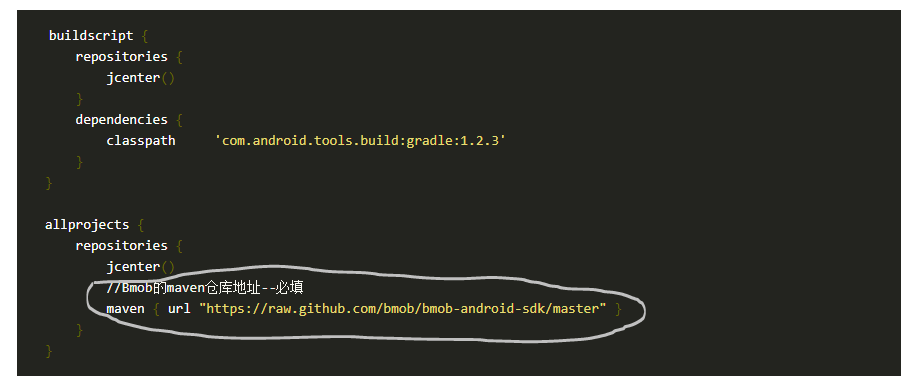

在app的build.gradle文件中添加compile依赖文件,示例如下：（注意文字说明部分）：

第一步：
首先需要有一个账号，按照网上教程进行注册，网址如下：
Bmob官网
第二步：
在app的build.gradle文件中添加compile依赖文件,示例如下：（注意文字说明部分）：
第三步：
在 Project 的 build.gradle 文件中添加 Bmob的maven仓库地址，示例如下：（注意文字说明部分）：

只需要加白线圈里的内容